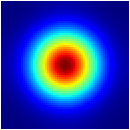
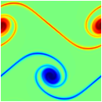
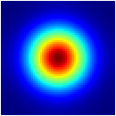
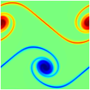

∗ Introduction
This website is designed to provide a tutorial for students in computational astrophysics (and hydrodynamics in general). We introduce simple implementations of some popular methods used in the field through the python-based code pyro (PYthon hydRO). pyro is a teaching code, written to be easily understandable. It is not parallel, and not meant for demanding scientific simulations—given the choice between performance and clarity, clarity is taken.
Pyro builds off of a finite-volume framework for solving PDEs. There are a number of solvers in pyro, allowing for the solution of hyperbolic (wave), parabolic (diffusion), and elliptic (Poisson) equations. In particular, the following solvers are developed:
- linear advection
- compressible hydrodynamics
- multigrid
- implicit thermal diffusion
- incompressible hydrodymamics
- low Mach number atmospheric hydrodynamics
In the pages that follow, the following format is adopted:
- PDF notes provide the basic theory behind the methods. References are cited to provide more detail. Exercises interspersed fill in some of the detail.
- An overview of the use of the applicable modules from pyro provided.
- Exercises are suggested to help students learn more about the method.
∗ Getting Started
pyro is under active development. To download the current version, visit the download page. For help, visit the help page.
The best way to proceed is to follow the topics in the order they appear in the menu bar above, starting with the description of pyro's design and then the main grid class, etc.